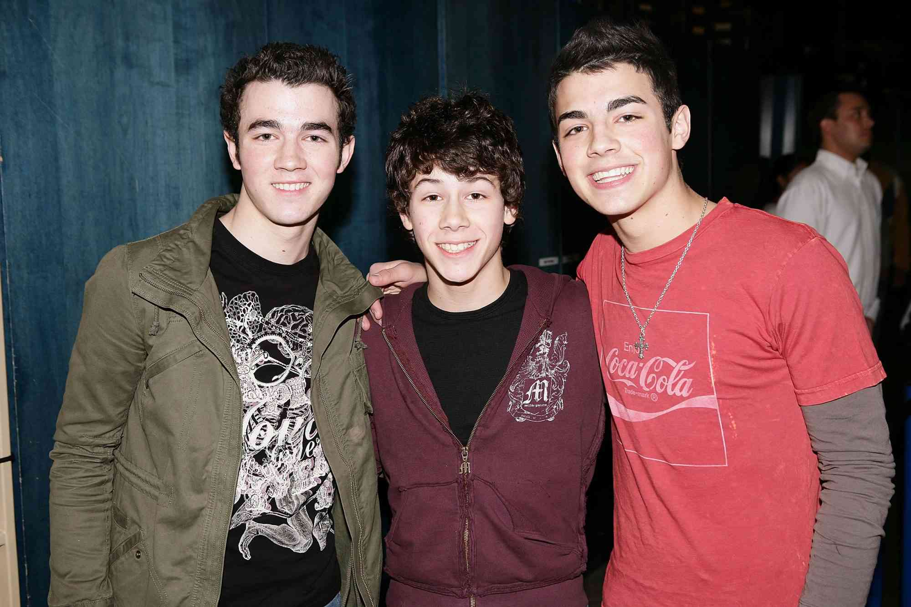
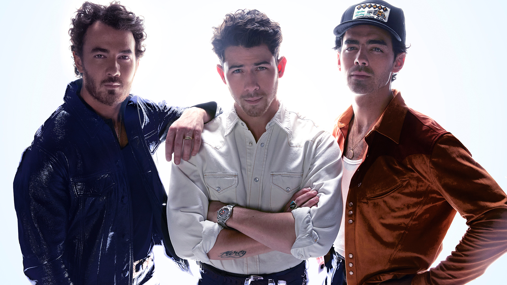

A história começou com Nick Jonas, que foi descoberto com seis anos cantando em um salão enquanto a sua mãe cortava o cabelo, um empresário profissional gostou muito de Nick e lhe deu um trabalho na Broadway. Ele atuou em várias peças, incluindo A Christmas Carol em 2000, Anie Get Your Gun em 2001, A Bela e a Fera em 2002 e Os Miseráveis em 2003. Durante o desempenho de A Bela e a Fera, Nicholas escreveu uma música com seu pai chamada "Joy To The World (A Christmas Prayer)”, Nick cantou a música em 2002 em um álbum da Broadway. Em novembro de 2003, um empresário recebeu uma cópia e a música foi lançada nas rádios cristãs, onde rapidamente se tornou popular. Até que em setembro de 2004, um executivo da Columbia Records descobriu as músicas do Nick. Nick logo assinou contrato com a Columbia Records e lançou mais algumas musicas. Nick junto com os seus irmãos Kevin e Joe, escreveram várias outras canções e durante esse processo, os produtores notaram que seus irmãos também tinham talento musical e sugeriram que formassem uma banda. Assim, os Jonas Brothers nasceram em 2005. O primeiro álbum intitulado "Its about time" chamou a atenção dos empresários do canal Disney Channel, acontecendo assim diversas participações dos irmãos nos seriados da Disney e assim foram ganhando cada vez mais popularidade. Em 2008, eles estrelaram o filme Camp Rock, o sucesso foi tão grande que foram chamados para estrelarem sua própria série do Disney Channel, Jonas, que foi rebatizada como Jonas LA na segunda temporada, também lançaram um filme com bastidores e apresentações da turnê mundial, intitulado “Jonas Brothers: The 3D Concert Experience”. O fim da banda foi anunciado em 29 de outubro de 2013. Porem após seis anos, o grupo voltou a ativa com o lançamento de "Sucker" em 1 de março de 2019.
 